Swift 连飞教程
Swift Connected Flight Tutorial
Warning
由于zensical缘故，以下有序列表中的数字，均为错误的，我们已在#34中提交，您可进入此页面对议题(issue)进行追踪。
前言
本文档旨在为您提供一份清晰、详实的操作指南无论您是首次接触联飞，还是希望在一个规范化的新平台开始您的联飞之旅，本指南都将一步步引导您完成从软件准备、客户端配置、服务器连接到实际飞行操作的全过程我们涵盖了主流模拟飞行软件（如 Flight Simulator X、Prepar 3D、X-Plane、Microsoft Flight Simulator）的联飞设置要点，并重点强调了联飞中的规范、礼仪与安全准则。
我们坚信，遵循指引、熟悉流程、尊重规则，是保障您个人及其他参与者获得流畅、沉浸且富有成就感联飞体验的基础特别是对于新手飞行员，我们强烈建议您在参与联飞活动前，务必熟练掌握所选机型的操作，并认真阅读本指南。
现在，请跟随本指南，开启您的联飞旅程，我们期待在虚拟的蓝天之上，与您安全、顺畅地相会！
修订记录
| 版本 | 时间 | 编者 | 描述 |
|---|---|---|---|
| 0.1 | 2025.05.31 | 2352 | 第一版 |
| 1.0 | 2025.06.01 | 2352&5516 | 修改排版、增加部分内容 |
| 2.0 | 2025.11.12 | 5516 | 增加Markdown版、将文字界面改为消息界面、修订已知错误(#12) |
第一章 连飞软件的安装及配置
1. 下载所需文件
1.1 Swift客户端
首先，需要下载swift联飞客户端，任意版本均可，Swift Github仓库官方下载地址：
请尽可能避免使用Alpha版本，除非您清晰明确的知晓使用Alpha版本可能导致的后果，如下图所示（图片截于2025.05.29）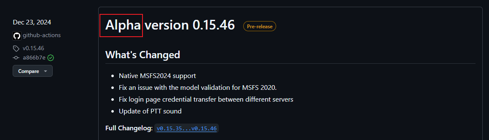
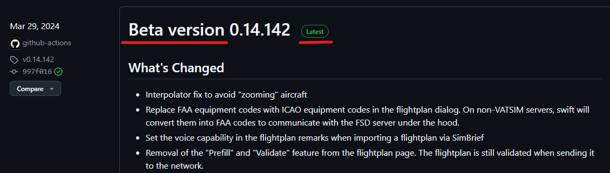
Note
请不要使用Alpha开头的版本
请使用以Beta或者只有Version开头且后方标记为latest的版本
然后根据您的操作系统及模拟器情况，点击“Assets”下方特定版本的安装包下载

| 模拟器 | swift 32bit | swift 64bit |
|---|---|---|
| FS2004 - FS9 | ✅ | ❌ |
| FSX | ✅ | ❌ |
| MSFS - FS2020 | ✅ | ✅ |
| P3D v1-v3 | ✅ | ❌ |
| P3D v4 and later | ❌ | ✅ |
| X-Plane 11 | ✅ | ✅ |
| Flightgear | ✅ | ✅ |
此图转自swift官方文档
如果您是X-Plane 11/12用户，还需要下载xswiftbus，后文 将再次提到

请确保xswiftbus的版本号，即0.14.142，与您下载的swift版本号相匹配
请注意：
| 名称 | 类型 | 安装位置 |
|---|---|---|
| Swift | 软件 | 任意位置 （就像日常安装的软件一样） |
| xswiftbus | 插件 | X-Plane的插件文件夹 |
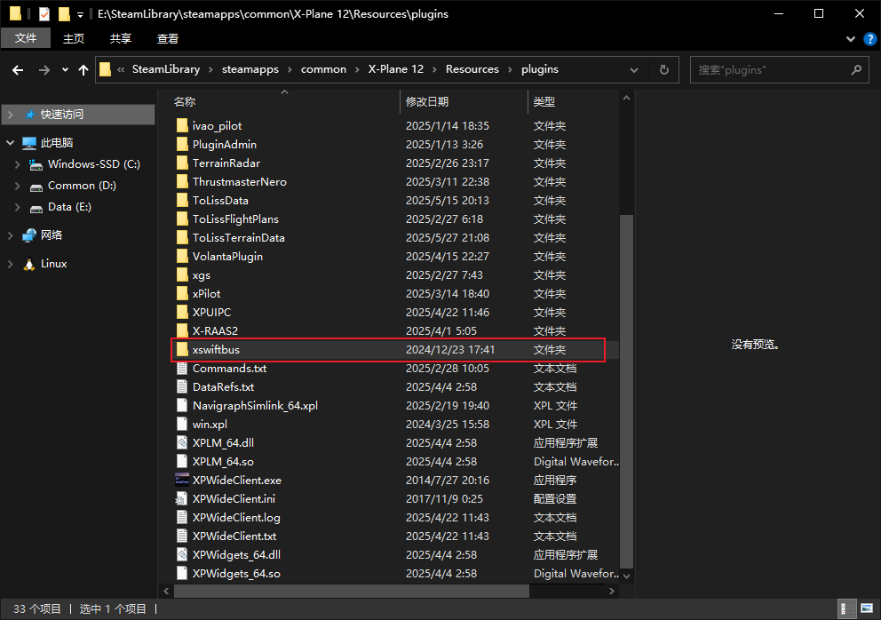
1.2 下载机模映射包
关于映射包的作用：
机模映射包对于完整的连飞体验来说是必需且必要的，虽然不同模拟飞行软件的机模映射包各不相同，但对于连飞而言，其底层逻辑逻辑是一致的，即：
- 使模拟飞行软件和swift 可以读取几乎所有主流机型的“飞机模型”（即“机模”）；
- 在游戏内添加“AI”飞机；
- 根据从连飞服务器上其他飞机的状态，同步调整“AI”飞机的状态
由此实现了将服务器上的其他飞机 “映射” 到您自己的模拟飞行软件中
所以“机模”由映射包提供，“映射”则由联飞软件提供
1.2.1 MSFS 2020 映射
推荐使用AIG映射包
AIG映射包下载后需要手动解压到MSFS的community目录下，注意不要出现文件夹嵌套
百度网盘：https://pan.baidu.com/s/1fBCBvSGkq6pUC6d7jYa2lA?pwd=9jkc
1.2.2 X-Plane 11/12 映射
您可以使用官方文档中提到的X-CSL作为X-Plane的映射包，这里是X-CSL的官网：https://x-csl.ru/downloads
按照X-CSL官网提供的步骤进行下载安装即可
鉴于X-CSL的官方下载器的下载速度感人，这里给出网盘下载地址
百度网盘：https://pan.baidu.com/s/1FdbYVhd8lucimYaXXuTmMw?pwd=hkps
123云盘：https://www.123912.com/s/oFMGTd-Rs4gv? 提取码:tZgp
下载后请解压到xplane目录的任意位置，推荐放在Custom Data文件夹下，文件名随意，但一定要在xplane的目录下，xplane无法读取目录以外的文件
1.2.3 Flight Simulator X & Prepar 3D
swift官方关于Flight Simulator X、Prepar 3D机模映射的文档
官方文档也没写太多东西，只提了一嘴P3D用的是AIG映射包
2. 安装Swift
Danger
在安装之前，请确认四件事情：
-
确保关闭所有正在运行的swift和模拟器
-
swift安装包和对应的映射文件已经下载完毕
-
对于X-Plane 11/12的用户：xswiftbus已正确安装并加载
-
确保使用的是正确的swift32或swift64位版本
本小节以windows10 64位为例，其他操作系统大同小异
本教程假设您为第一次安装swift，如果您曾经安装过swift，则部分页面会有些许不同，请您灵活应变
-
双击运行swift安装程序，你可能会看到如下窗口，点击“是”即可：
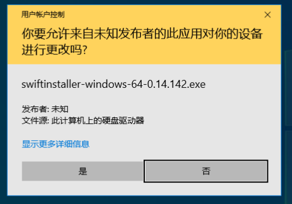
-
点击“Next”

-
点击“I accept the agreement”，然后下一步

-
红框内请按照你安装的模拟器勾选，然后下一步

Note
注：除了红框内的内容，不要动其他的选项。
-
在这个页面可以自定义安装目录，建议放置在自己记得的位置。

Note
注：其他选项不要动，下一步。
-
点击Next
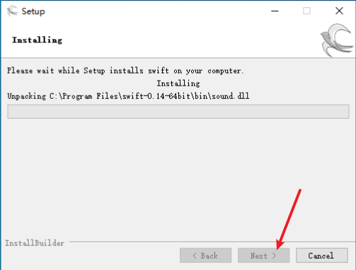
-
等待安装完成后，点击下一步

-
随后会弹出如下页面

-
请等待他初始化完成，初始化完成后会跳出如下页面：

-
此时我们的swift已经安装好了，接下来要进行swift的配置
3 Swift配置（模型库安装）
3.1 同意使用协议
勾上这两个复选框，前者表示同意使用协议，后者表示向服务器发送崩溃报告。
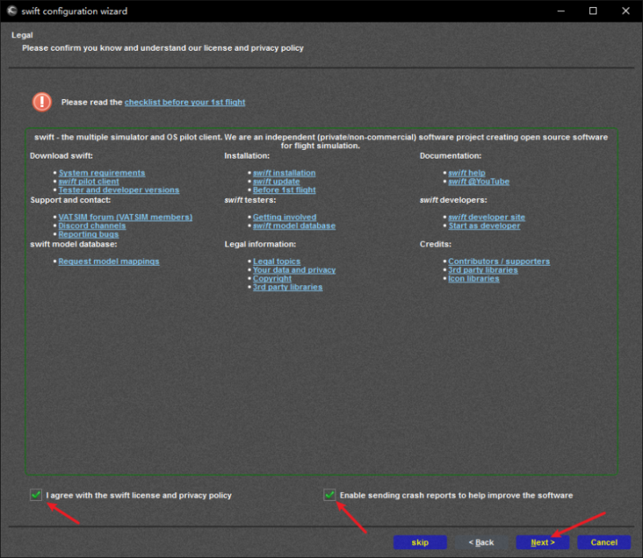
3.2 检查数据库
在此页面您也许需要等待一些时间，来让Swift下载运行所必须的数据，当“Next”按钮亮起的时候，代表您可以继续进行下一步了，后续Swift可能会在后台继续下载一些数据。

3.3 从其他版本复制模型库
如果您曾经安装过其他Swift版本，可以在此页面从其他Swift中复制模型库。
如果您是第一次安装Swift或者不需要其他版本的模型库，则可以直接进行下一步。

3.4 从其他版本复制配置文件

3.5 路径配置
-
对于上方的模拟器，您飞哪个，就勾选哪个 请不要多勾选，后续您需要对每个模拟器进行模型库配置 这里我们以X-Plane为例（其他模拟器操作类似）

-
首先，需要检查模拟器路径（第一行）和模型库路径（第二行）是否正确， 如果swift没有正确识别，需要点击对应的右侧按钮，手动选择目录

-
对于其他模拟器，同理 检查无误后，点击save按钮后，进入下一步 （如果有多个模拟器，请全部检查完成并save后再进入下一步）

3.6 创建模型库
这里同样以X-Plane为例：
-
首先，需要在左侧选择对应的模拟器平台，在这里我们选择X-Plane 然后，注意力来到右侧的models选项卡 第一行，是模型库路径，这里再次检查一下是否正确

-
然后，点击第二行的display按钮，会弹出如下窗口：

我们点击force reload，耐心等等他重新加载完。
3.7 X-CSL映射
-
如果您是用的X-CSL官方的下载器下载的，那么会显示报错。

-
此时我们关掉该报错窗口，然后在任意一个模型上右键：
->simulator
->Xplane:run CSL2XSB on all models
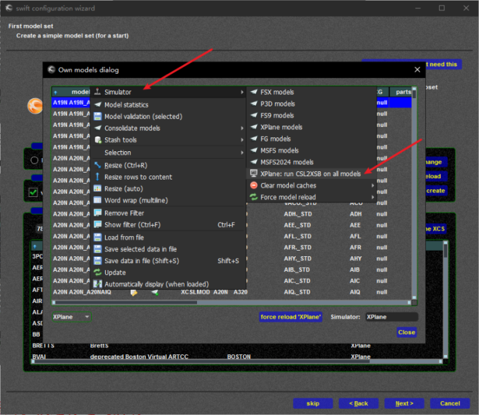
-
此时会打开一个黑窗口。
我们键入y并且回车，等他输出完成后，关掉该窗口。

-
我们重新force reload一遍。

若一切正常，则您可以看到如上窗口
-
此时我们关闭最上面的两个窗口，点击create按钮

-
对于第一个跳出来的窗口，选择Yes
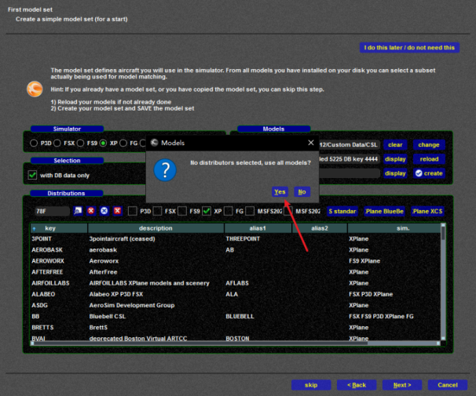
-
如果之前有创建过模型库，会有第二个窗口，我们同样选择yes
如果之前没有创建过模型库，则不会有第二个窗口弹出
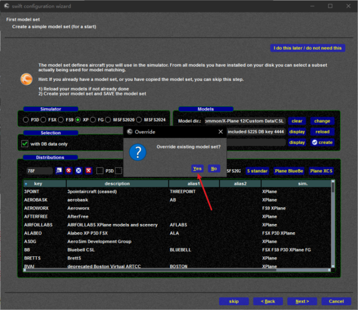
-
在最后弹出的窗口中，我们点击右下角的save ‘XPlane’
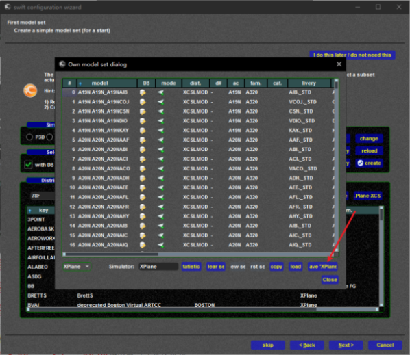
-
出现左图的窗口时，说明swift正在保存模型库，需要耐心等待

-
当该窗口自主消失的时候，说明模型库创建成功，我们可以关掉最上层的窗口
随后检查一下模型数量，一般来说这个数字是越大越好

-
对所有模拟器平台都完成上述操作并创建完模型库后，我们进入下一步
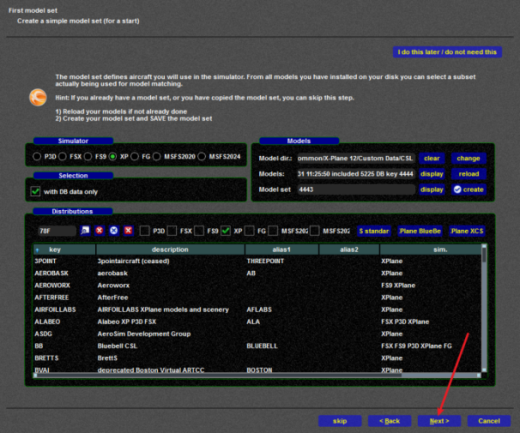
3.7 安装xswifbus（仅X-Plane玩家）
由于我们在准备阶段就已经安装完成，所以这里不需要动任何东西，直接进行下一步
如果没有安装，可以点击这里再次阅读
3.8 配置快捷键
这里用来配置swift的快捷键，包括PTT等，但由于本平台不使用swift内置的语音，所以该页面可以直接跳过

至此我们的swift模型库就配置完成了
4. 服务器配置
-
点击GUI按钮；或者双击安装目录下swiftguistd.exe ，打开swiftgui页面；

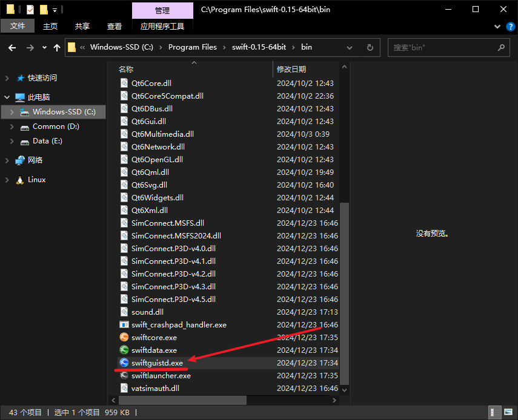
下图所示是swift的主页面：

-
我们点击Settings->Server


-
在下方填写如下信息：
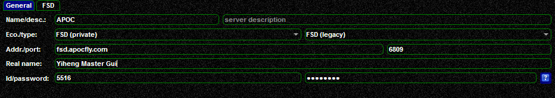
| 名称 | 左填空栏 | 右填空栏 |
|---|---|---|
| Name/desc. | 该服务器显示的名字，可以任意填写 | 服务器的描述 |
| Eco./type | FSD (private) | FSD (legacy) |
| Addr./port | fsd.apocfly.com | 6809 |
| Real name | 自己的昵称 | |
| Id/password | 登录飞控的呼号 | 登录飞控的密码 |
-
全部填写完成后，点击右下角save

5. swift使用说明
下面为swift的主界面，我们仅对几个经常用到的功能做详细说明

5.1 Connect页面
该页面是用于连接服务器的页面 Swift 版本不同该页面可能会有些许不同，但操作逻辑相同
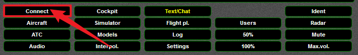

-
检查上方Network 选项框，选择Other Servers
-
下面选择APOC服务器
-
Login这里需要检查是否是Normal位置，如果不是，检查模拟器启动是否正常
-
下方的Pilot Info，检查无误即可
-
Home这里可以填你的基地机场，选一个自己喜欢的机场ICAO码填进去就行
-
最后一个区域，需要检查Callsign 是否正确
-
Aircraft 是否是自己执飞的机型
-
Airline 是否是自己执飞的航司
-
全部检查无误以后点击Connect 连接

当显示该页面的并且左下角变成绿色，代表你已经连接成功
Warning
警告：请不要在跑道/滑行道上出生，这是违反CoC 3.6的违规行为
5.2 飞行计划页面

点击Flight pl. 进入飞行计划页面，界面如下：

飞行计划填写的顺序是，自左向右，自上而下填写，如下图所示：

解析如下：
- Type：飞行类型，一般我们航线飞行选择IFR即可
- Callsign：航班呼号，在上面连接的时候填写，这里无法修改
- Aircraft：飞机的ICAO 识别码，swift自动填写，一般不用动
- Wake Turbulence Category：尾流类型，swift自动填写，一般不用动
-
NAV/COM Equipment：导航和通讯设备代码，表明飞机的导航和通讯能力，如果不知道填什么，可以不用动
-
SSR Equipment：二次雷达代码，表明飞机的二次雷达设备能力，如果不知道填什么，可以不用动
-
TAS：计划飞行的真空速，如果不知道数值，可以不填，也可以填一个经验值（400-450）
-
Departure airport：离场机场，填写离场机场的ICAO码
-
Departure time：计划离场时间，UTC时间，不了解可以不用管
-
Cruising altitude：计划巡航高度，以英尺作为单位，如果飞国内航线需注意米制转换
- Route：计划航路
-
Destination airport：到达机场，填写到达机场的ICAO码
-
Est.time enroute：计划航路时间，计划的飞行时间，不清楚可以不填
-
Fuel on board：机载燃油的飞行时间，不清楚可以不填
-
Alternate Airport：备降机场，填写备降机场的ICAO码，没有备降场可以不填
-
remarks：备注信息，备注信息右侧的下拉框表示交流类型；
Full voice 表示可以接受双向语音管制；
Receive vioce 表示只能单向接受语音管制；
Text only 表示只能接受双向文字管制
Note
注：在管制空域内，此处提交的内容只需要提交一次，若您认为飞行计划有问题或管制员告知您的飞行计划有误时，您仅需要在您的飞机上进行更改，而您的计划，管制员会帮忙进行更改。
Note
此功能仅限APOC模拟飞行平台使用
确认所有内容填写正确后，点击Send 按钮发送飞行计划到服务器（若不放心您也可以多点几下）

出现下方窗口代表发送成功

5.3 消息界面


这里主要用于与管制员的文字交流
先点击Message to，在选择要发送到的管制席位
最后在下面Message 中输入内容，随后按下回车，即可发送消息
如果要在频道内发送消息，则点击上方COM1 或者COM2
在下方输入框中输入消息，回车发送即可
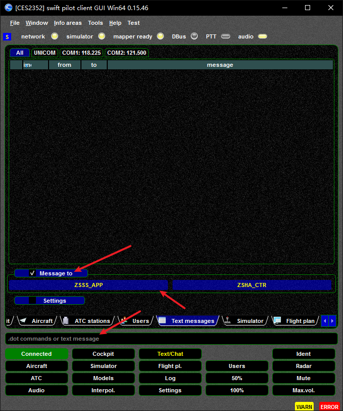
5.4 ATC页面
用于查看周围在线的管制员

5.5 Radar页面
用于查看周围的机组

5.6 Aircraft页面
同样可以查看周围的机组，不过是以列表形式展现

6. 联飞说明
不要使用不熟悉的机模进行连飞活动！
不要使用不熟悉的机模进行连飞活动！！
不要使用不熟悉的机模进行连飞活动！！！
- 不熟悉指：无法熟练使用自动驾驶或其他机载设备，准确无误的完成管制员的指令，并在管制员询问飞机状态时准确无误的回答
所以，参加连飞活动请务必、一定、必须使用自己熟悉的机模
这不仅仅保障了你有一个良好的活动体验，也同时保障了其他活动参与者和管制员的活动体验
后记
连飞从来不仅是一场飞行模拟，更是一段人与人之间的协作与交流体验。
无论您是第一次踏入虚拟蓝天的新飞行员，还是已在各大网络飞行平台积累了丰富经验的资深机长，我们都希望本指南能为您带来清晰的方向与可靠的参考，帮助您更加顺利地融入联飞环境。
航空是一门严谨的学科，联飞亦然。规范、沟通、尊重与默契，是让每一次联飞变得愉快而富有成就感的关键。请记住：您的每一份准备、每一次遵守流程、每一次与他人的有效协作，都是让天空更加有序与和谐的重要力量。
若您在阅读本教程的过程中遇到疑问、发现疏漏、或愿意贡献改进内容，我们诚挚欢迎您提出建议。您的反馈将使本教程不断完善，也能帮助更多飞行员收获更好的联飞体验。
愿我们在无线电中相遇，在航迹上并肩，在虚拟的天空里，共同飞得更高、更远。
期待在下一次的联飞活动中，与您在空中相见。
参考资料
[1] Swift.文档站